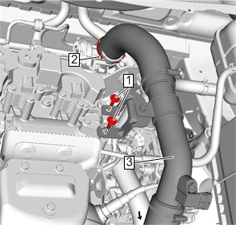
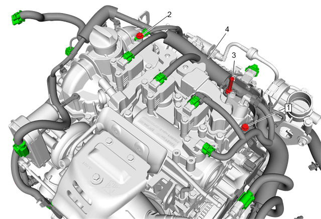
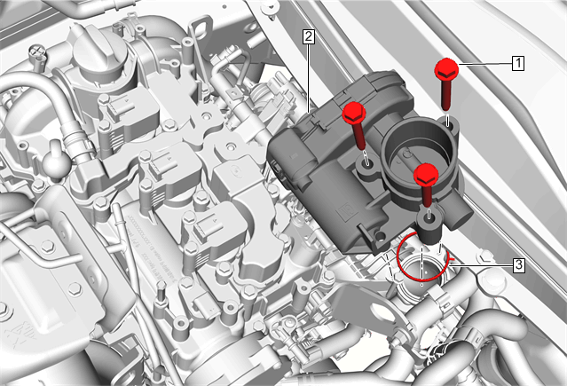
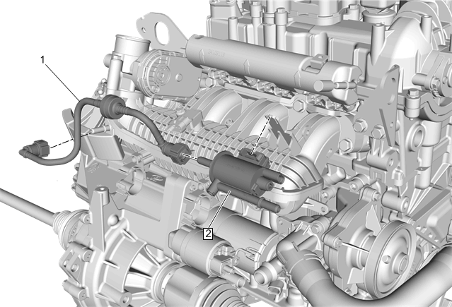
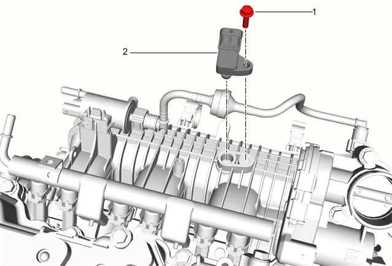
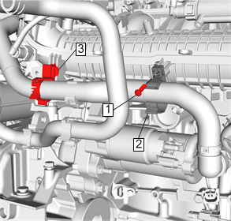
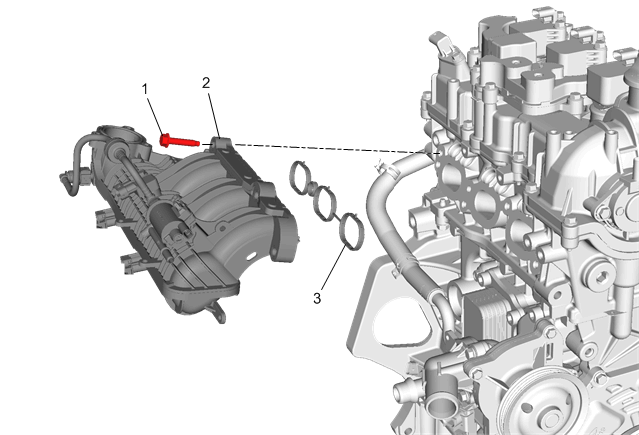
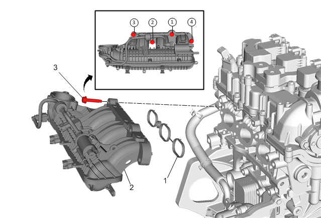

进气歧管的更换（LI6）
拆卸程序
- 1.拆下进气歧管盖。进气歧管盖的更换
- 2.断开蓄电池负极电缆。蓄电池负极电缆的断开和连接
- 3.释放燃油压力。卸去燃油压力
- 4.拆下进气侧凸轮轴位置传感器。凸轮轴位置传感器的更换
- 5.拆下油气分离器。曲轴箱强制通风装置油气分离器的更换
-

6.从节气门体上拆下增压空气冷却器出口管（3）。增压空气冷却器出气软管的更换
-

7.拆下发动机线束托架螺栓（1）。
- 8.拆下发动机线束螺栓（2）。
- 9.拆下进气歧管盖双头螺柱（3）。
- 10.断开各线束连接器，将发动机线束（4）移至一旁。
-

11.拆下节气门体总成（2）。节气门体总成的更换
-
12.拆下燃油喷射燃油导轨总成（3）。燃油喷射燃油导轨总成的更换
-

13.从进气歧管上拆下蒸发排放炭罐吹洗电磁阀（2）和软管（1）。蒸发排放炭罐吹洗电磁阀的更换
-

14.拆下进气歧管绝对压力传感器螺栓。（1）
- 15.拆下进气歧管绝对压力传感器。（2）
-

16.拆下进气歧管卡箍螺栓。（1）
- 17.拆下进气歧管卡箍。（2）
- 18.拆下散热器储液罐出口软管卡环（3），使其断开与进气歧管的连接。
-

19.拆下进气歧管螺栓。（1）[4x]
- 20.拆下进气歧管。（2）
- 21.拆下并报废进气歧管密封垫。（3）
安装程序
- 1.安装前清洁并检查进气歧管。进气歧管的清洗和检查、进气歧管的清洗和检查（LI6）
-

2.安装进气歧管密封垫。（1）
- 3.将进气歧管总成（2）对准并安装进气歧管螺栓（3），并按图示顺序紧固至25N•m (18 lb ft)。
-
4.安装散热器储液罐出口软管卡环。（3）
- 5.安装进气歧管卡箍（2）至进气歧管。
- 6.安装进气歧管卡箍螺栓（1）并紧固至3.5N•m (31 lb in)。
-
7.安装进气歧管绝对压力传感器（2）至进气歧管。
- 8.安装进气歧管绝对压力传感器螺栓（1）并紧固至10N•m (89 lb in)。
-
9.安装蒸发排放炭罐吹洗电磁阀（2）和软管（1）。蒸发排放炭罐吹洗电磁阀的更换
-
10.安装燃油喷射燃油导轨总成（3）。燃油喷射燃油导轨总成的更换
-
11.连接各线束连接器，重新定位发动机线束（4）。
- 12.安装进气歧管盖双头螺柱（3）并紧固至10 N•m（89 lb in）。
- 13.拆下发动机线束螺栓（2）并紧固至9 N•m（80 lb in）。
- 14.拆下发动机线束托架螺栓（1）并紧固至9 N•m（80 lb in）。
-
15.安装节气门体总成（2）。节气门体总成的更换
-
16.安装增压空气冷却器出口管（3）至节气门体。增压空气冷却器出气软管的更换。
- 17.安装油气分离器。曲轴箱强制通风装置油气分离器的更换
- 18.安装进气侧凸轮轴位置传感器。凸轮轴位置传感器的更换
- 19.连接蓄电池负极电缆。蓄电池负极电缆的断开和连接
- 20.安装进气歧管盖。进气歧管盖的更换